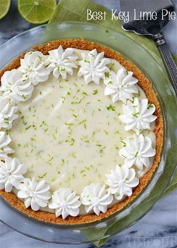

Key lime pie
A key lime pie is a North American dessert pie.It's a bit like a lemon meringue pie but made with Key limes
from the Florida Keys area.Here's a photo of one

Photo credit:Averette.The liccence is CC-BY-SA 3.0
Ingredients
Common ingredients include:
- Eggs
- Key Limes
- Graham crackers(for the crust)
If you want to buy Graham crackers in Auckland, you need to go to Martha's Backyard in Mt
Wellington,which sells many products impported from the USA